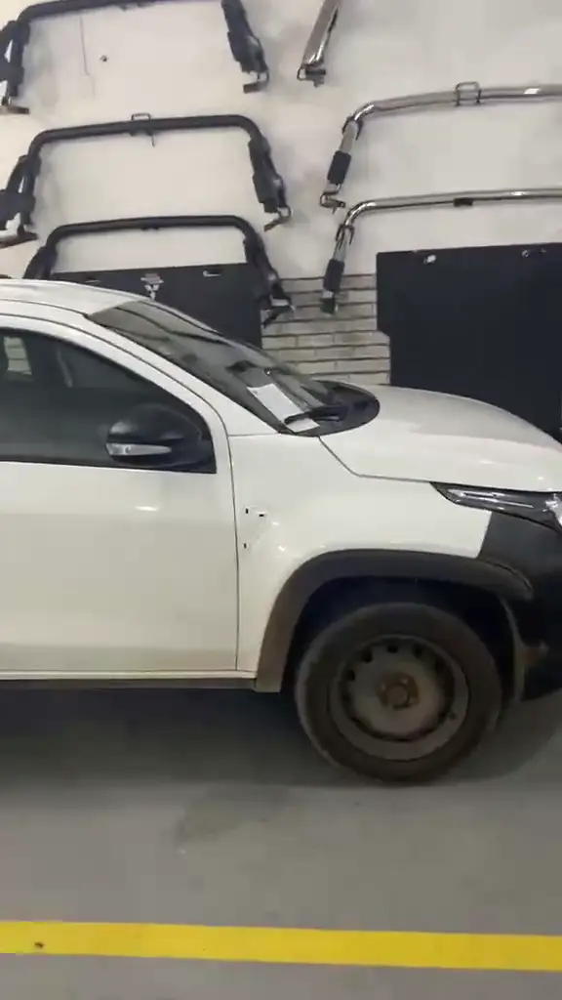
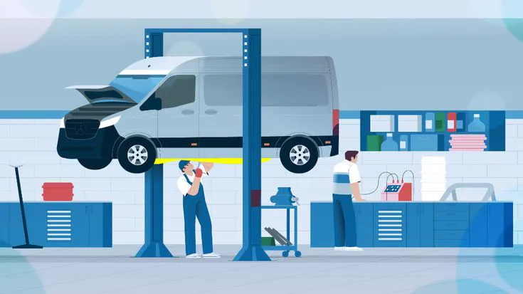

Você economiza tempo
As perguntas repetidas, os orçamentos e os agendamentos saem do seu celular. Você e a equipe ficam livres para vender, instalar e atender quem já está na loja.
Não é uma resposta automática genérica. É um atendente treinado no seu negócio, que responde do seu jeito, a qualquer hora, sem cansar.
As perguntas repetidas, os orçamentos e os agendamentos saem do seu celular. Você e a equipe ficam livres para vender, instalar e atender quem já está na loja.
O robô não cansa, não tem dia ruim e não esquece etapa. O cliente das 8h e o das 23h recebem o mesmo atendimento completo.
Responde em segundos, chama o cliente pelo nome e manda só o que serve para ele: o modelo certo, o preço certo, o vídeo certo.
Você grava, o robô envia na hora certa. O cliente ouve você falando e não percebe que está conversando com um robô.
Cada frase foi escrita para levar o cliente ao próximo passo: tirar a dúvida, ver o produto, entender o preço e agendar.
O robô recebe um contexto enorme do seu mercado e do seu jeito de trabalhar: produtos, compatibilidades, prazos, objeções e as respostas que você daria.
Os três vídeos são de uma loja de acessórios para picape que usa o agente de IA no WhatsApp. Ninguém da loja digitou as respostas: o robô conduziu cada conversa do primeiro “oi” até o cliente chegar na loja no horário marcado.
O cliente mandou as fotos da picape dele. O robô entendeu o veículo, perguntou só o que muda o produto e, quando o cliente respondeu, mandou tudo de uma vez.
No WhatsApp Web da loja dá para acompanhar o robô trabalhando. Enquanto um cliente recebe o orçamento, outro já está com a instalação agendada.
É aqui que o atendimento automático vira dinheiro. Os carros no pátio são de clientes que conversaram só com o robô: receberam orçamento, escolheram o modelo, agendaram e foram lembrados na véspera e uma hora antes.
As placas dos veículos foram borradas para proteger os clientes.
Este é o roteiro do atendimento dos vídeos, com os nomes trocados por exemplos. Cada caixa é uma etapa que você aprova e pode editar no painel: a frase, o áudio, a foto ou o vídeo que vai para o cliente.
Áudio gravado pelo dono. O cliente ouve uma pessoa, não uma mensagem automática.
Só quando falta o produto, o modelo ou o tamanho. Se o cliente já disse, pula.
“Qual produto você procura? Para qual modelo e ano?”Não sabe? O robô manda todos os modelos que servem e convida para conferir na loja.
Foto de cada modelo que serve, com nome e preço. Pediu dois itens? Vão as fotos dos dois.
Em seguida: “É isso que você está buscando?”
O preço é sempre o do modelo escolhido, puxado do catálogo. Sem erro de digitação.
Véspera, 9h: confirma dia, hora e produto.
1 hora antes: “Já estamos te esperando!” + endereço.
“Vocês instalam?”, “Tem desconto?”, “A peça vem completa?” — cada uma com a resposta que você gravou.
Endereço, horário de funcionamento, link do mapa e das avaliações no Google.
O robô move o cliente de etapa conforme a conversa anda: chegou, está sendo atendido, recebeu orçamento, agendou, comprou. Quem parou de responder entra no follow-up, e você vê tudo num painel só.
Cada produto tem a sua duração e cada horário tem um limite de carros ao mesmo tempo. O robô só oferece ao cliente os dias e horários em que o serviço cabe inteiro, marca sozinho e já avisa o cliente.
Quero agendar a instalação da capota 👍
Perfeito! A instalação leva cerca de 40 minutos. Tenho estes horários livres:
📅 Sex 28/11 — 10h ou 12h
📅 Sáb 29/11 — 8h, 10h ou 11h
📅 Seg 01/12 — 8h ou 10h
Qual fica melhor para você?
Segunda às 10h
Pronto, agendado! ✅
Segunda, 01/12, às 10h · Capota marítima
Te mando o endereço e um lembrete na véspera. Até lá!
Quem agendou recebe lembrete. Quem demonstrou interesse e ainda não fechou recebe mensagens e vídeos feitos para aquele produto, no dia e na hora certos, até chegar ao agendamento.
Oi, Henrique! Ficou alguma dúvida sobre a capota marítima da sua Strada? 🙂
HojeSeparei um vídeo da instalação numa Strada igual à sua, para você ver como fica:

0:18Tenho horário livre amanhã às 10h ou às 14h. Quer que eu reserve? 📅
Pode ser amanhã às 10h
Agendado! ✅ Amanhã às 10h. Te mando o endereço e um lembrete antes.
Ele segue o roteiro que você aprovou, puxa preço e foto do catálogo e chama a sua equipe quando o assunto sai do script.
Quero um robô assimCliente que manda mensagem às 23h recebe o orçamento às 23h, não no dia seguinte, quando já fechou com outro.
Saudação e respostas das dúvidas mais comuns em áudio gravado por você. O atendimento fica pessoal.
Manda só o que serve para o cliente, com o preço atualizado do painel e o vídeo do produto instalado.
Marca sem conflito, manda o endereço e lembra o cliente na véspera e uma hora antes.
Sequência de mensagens em dias e horários definidos por você, até o cliente agendar ou dizer que não quer.
Assunto fora do roteiro, item sem estoque ou cliente pedindo uma pessoa: o robô chama o atendente.
Quem pede orçamento costuma mandar a mesma mensagem para três ou quatro lojas. A primeira resposta completa leva a venda.

Se a sua equipe responde as mesmas perguntas o dia inteiro, o robô assume essa parte e deixa as pessoas para fechar e executar.
Você conta como atende hoje, o que vende e onde perde cliente.
Desenhamos as etapas, como no fluxo acima, e você aprova cada frase.
Cadastramos produtos, fotos, vídeos e preços. Você grava os áudios.
Simulamos conversas reais e ajustamos até o robô falar do seu jeito.
O robô começa a atender e você acompanha tudo pelo painel e pelo WhatsApp.
Sim. O agente atende no número que os seus clientes já conhecem. Você continua vendo todas as conversas no seu celular ou no computador e pode entrar em qualquer uma a qualquer momento.
As mensagens seguem o jeito de falar da sua empresa, com as frases que você aprova, e os áudios são gravados por você. O robô responde rápido, sem erro de preço e sem esquecer ninguém. Quando o assunto foge do roteiro, ele chama um atendente da sua equipe.
Ele não inventa. Perguntas frequentes recebem a resposta que você cadastrou, muitas vezes com áudio seu. Fora disso, o robô avisa que vai chamar um atendente e passa a conversa para a sua equipe.
Sim. Tudo fica num painel: frases de cada etapa, catálogo com fotos e preços, vídeos, áudios, horários de agenda e mensagens de follow-up. Mudou o preço, o robô já manda o novo na próxima conversa.
Sim. Ele oferece só os horários livres da sua agenda, marca, manda o endereço e envia lembrete na véspera e uma hora antes. Quem não agendou entra numa sequência de follow-up com dias e horários definidos por você.
Serve para quem recebe muitas mensagens parecidas no WhatsApp e vende por orçamento ou por agendamento: lojas de acessórios e autopeças, oficinas, estética, clínicas, prestadores de serviço, imobiliárias, escolas e cursos. O roteiro é montado em cima do atendimento que já funciona na sua empresa.
O valor depende do tamanho do catálogo e de quantas etapas o atendimento tem. Chame no WhatsApp, conte como você atende hoje e receba a proposta. A implantação inclui mapear o atendimento, cadastrar catálogo e áudios, testar com você e ligar no seu número.
Conte como a sua empresa atende hoje. A gente mostra como fica o fluxo do seu robô e o que dá para automatizar já na primeira semana.